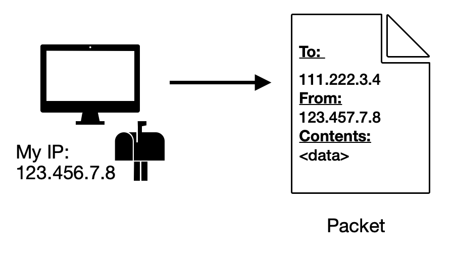
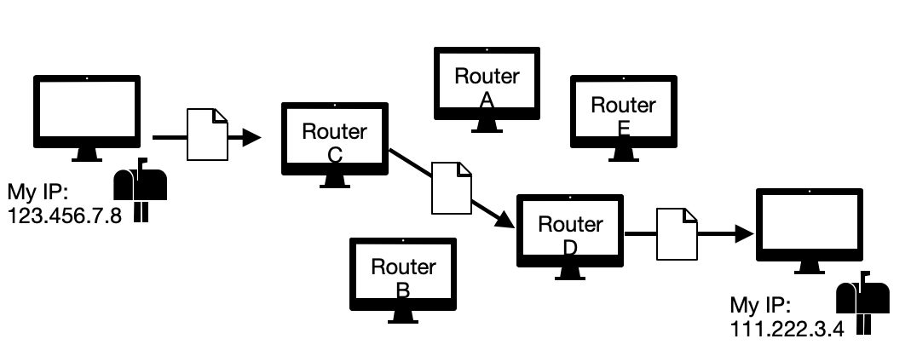
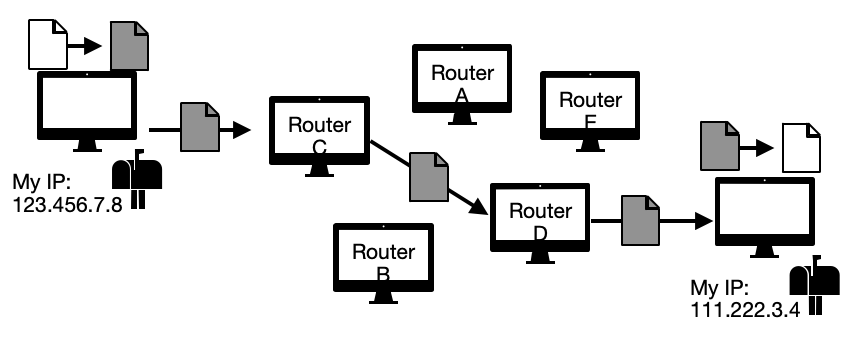
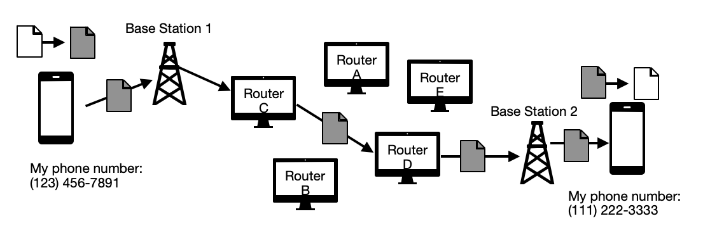
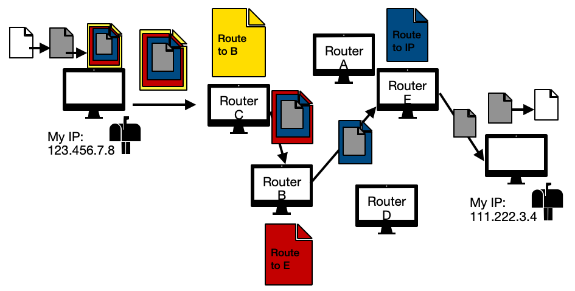

Introduction - Internet Functionality
In this article, I talk about how encryption works for everyday communication purposes. We all have the expectations of a right to privacy, and encryption allows us to maintain that right.
In order to explain
how encryption works, we need to talk a little bit about the structure of the internet.
How does the internet work?

The internet is a network where many many computers link together. Websites are stored on computers connected to the network which are known as servers. Every computer is accessible via a numerical address known as an IP address. A person who wishes to contact another computer on the network may send a ‘packet’ (which is a small segment of data) with the recipient’s IP address listed.
Because humans are bad at remembering lists of numbers, many people pay to register their IP address to be associated with a URL. When using URLs, an individual’s computer will make a request to a special service known as domain name service (DNS) to look up the IP address associated with that URL.
Packets are sent to recipients through a system known as ‘routing’. Telecommunication companies who sell internet access maintain dedicated computers known as “switches” or “routers”. These machines have only one job - they take in packets, and send them to another router closer to the destination. This ends up being like a relay race, every router running the packet to the next handoff (each handoff is known as a “hop” in networking terminology). Eventually the packet ends up close enough to the destination that it can be forwarded from the router to the recipient IP address. Once the recipient has gotten the packet, they can read it and determine what to do next - such as sending a packet back which contains information necessary to load a webpage.

Message privacy on computers
This basic example of internet communication provides neither privacy of who you are speaking to nor what you are discussing - the sender, recipient, and contents of message are all written right on the packet being transmitted. This is similar to sending a postcard - anyone who handles the card can read all relevant information.
In the postal service, letters are typically encased in envelopes to provide a measure of privacy. Different types of envelopes provide different levels of security, some printed with patterns or from thick material in order to hide what is inside. In the domain of networking, a similar form of privacy can be found in ‘encryption’. Data can be transformed into an unreadable format using encryption mathematics, and then transmitted in that state. If a packet's message is encrypted before sending, and only decrypted to be read at the destination, it is known as ‘end-to-end encryption’ or E2EE. Those performing encryption can select from various encryption protocols in order to choose the relative security performance and cost desired.

Message privacy on phones
Modern mobile devices are digitized and rely on packet switching networks just like typical web communication is. The main difference is that the first and last leg of the journey of the packet is between the phones and their nearby cellular base station. Traditional SMS text messages are unencrypted and can be read by anyone listening to the cellular frequencies being used, or by any router used during the trip inside the network. This is why SMS text messages are considered one of the least private ways to communicate.
However, end to end encryption is still possible in text messaging. Some mobile devices claim to offer E2EE built-in, and apps such as Signal, Telegram, and WhatsApp have that as an option as well (in some cased enabled by default). The relative reliability and verifiability of these claims varies for each of these applications (It's worth investigating the level of security which feels right for you, but I'll give my opinions on these in one of the next articles).

Privacy through onions
As can have seen above, for traditional routing methods the source and destination must be known in order for messages to be passed along. An alternative routing paradigm to resolve this is known as “onion routing”. To go back to the letter analogy, in onion routing the client puts their envelope inside a series of larger envelopes, each with a different address on it. At each step, the outer envelope is removed, revealing the next leg of the journey. At each step it is impossible to determine more than the previous sender (available on the return address) and who the next recipient in the chain is. The name "onion routing" refers to all of the layers, the final heavily encapsulated packet actually being called an onion.
Specifically, instead of doing a single encryption at the source, the client pre-calculates each hop the packet must take. Then, layer-by-layer, the client will include an individual routing instruction (take this packet and pass it along to this destination) and encrypt it inside of another packet. By the end a large, many-layered packet is produced and sent to the first leg of the pre-determined route. This routing path is known as a ‘circuit'. Only at the entrance to the network (where the client sends the initial message in) and the exit (where the final destination receives the encrypted message) are the source or destination known. Once inside the network, only the previous sender and the next destination can be determined. This mid-network duration can be expanded arbitrarily to increase the relative security.

Typical telecommunication-owned routers don’t provide this service because of how different this routing protocol is from conventional practice. They simply follow the IP address and forward the message along, not bothering to decrypt or follow routing instructions held in the packet. Clients wanting to use onion routing must instead reach out to specialized computers who declare themselves as service providers of the onion network. Clients also must know the routers available in this network in order to generate the circuit for their onion to traverse.
Unfortunately, nefarious actors who wish to determine the end points of the communication - which onion routing is intended to hide - may invest in onion routers in the hopes of a circuit’s initial and destination hops occurring in their system. As was covered in the prior sections: in onion routing the source is known upon entry to the network, and the destination is known when the final packet exits. If someone has access to the first and the last router in the circuit they can determine the source and destination of the communication.
Conclusion
We all know the internet is used to communicate, but not everyone knows how. In this article we talked about packets and the methods used to pass them around. Encryption and methods of routing allow us to maintain privacy. In the
next article, we'll talk about how encryption itself actually works.
<- Back to Encryption